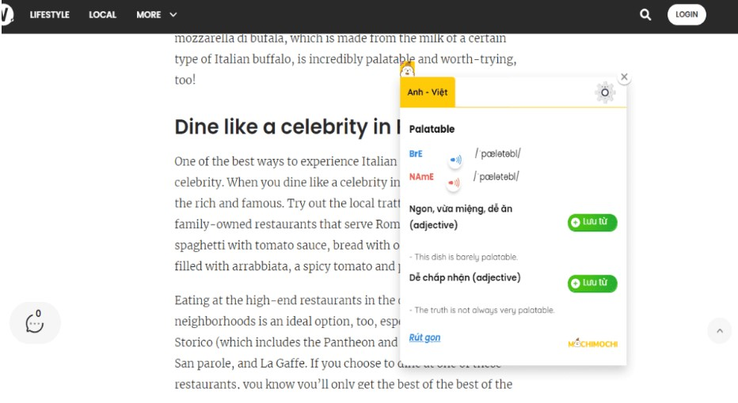

1. Đưa tiếng Anh vào cuộc sống hằng ngày
Trong tiếng Anh có thành ngữ “Use it or lose it” – “Dùng hoặc mất” nói về việc não bộ sẽ lãng quên những kiến thức không được nhắc lại thường xuyên. Vì vậy, một trong những lời khuyên phổ biến nhất để học tiếng Anh hiệu quả đó là bạn phải liên tục áp dụng những gì mình đã học vào cuộc sống hằng ngày. Một số người thường cho rằng nếu không sinh hoạt trong môi trường dùng tiếng Anh thì sẽ rất khó làm được điều này. Nhưng sự thật là bạn có thể bắt đầu từ những việc đơn giản mà bất kỳ ai cũng có thể thực hành.
Bạn có thể gọi tên các sự vật, hoạt động, hiện tượng quanh mình bằng tiếng Anh để ghi nhớ từ vựng lâu hơn. Thử tượng tượng bạn đang làm đồ ăn trong bếp, ngay lúc đó hãy tự hỏi xem nhà bếp là gì nhỉ? Kitchen! Bạn chuẩn bị lấy chảo để nấu ăn. Ồ chảo trong tiếng Anh là gì nhỉ? Pan? Chảo để nấu súp thì sao? Saucepan! Cứ như thế, bạn sẽ học được kha khá từ vựng trong bếp rồi đấy.
Sau khi đã biết cách “bật” ra những từ vựng đơn rồi, bạn có thể nâng cao kỹ năng bằng cách học từ vựng kèm với từ loại để biết đâu là danh từ (noun), động từ (verb) để thực hành đặt câu tốt hơn.
VD: Bạn thấy trời hôm nay rất là nóng và muốn mô tả nó. Bạn nghĩ ra một câu là: It’s hot today!, nhưng vẫn băn khoăn là không biết có cách diễn đạt nào khác nữa không. Sau một hồi tra cứu thì bạn nhận ra là có thể nói rằng: It’s scorching weather! (Nóng như thiêu đốt)
Duy trì thói quen này chắc chắn sẽ giúp vốn từ của bạn được gợi nhớ và lặp lại nhiều lần, từ đó khả năng ghi nhớ từ vựng sẽ tăng lên rõ rệt.
2. Học từ vựng theo phong cách “mưa dầm thấm lâu”
Từ vựng chắc chắn là thành tố cơ bản và quan trọng nhất để bạn xây dựng khả năng sử dụng tiếng Anh thành thạo, đặc biệt là kỹ năng giao tiếp. . Mặt khác, đây cũng có thể là cản trở lớn trong việc học tiếng Anh nếu bạn không có được vốn từ vựng đủ tốt. Hẳn là không ít người đã từng loay hoay trong việc diễn đạt ý muốn nói chỉ vì không biết từ cần dùng là gì, hoặc rơi vào những tình huống “dở khóc dở cười” vì sử dụng từ vựng không phù hợp với ngữ cảnh?
Trung bình, mỗi người sẽ cần 3.000 – 10.000 từ vựng để đạt được trình độ tiếng Anh cơ bản. Đây là con số khá lớn với những người học tiếng Anh như một ngoại ngữ, đặc biệt là những ai tự học tiếng Anh tại nhà. Do vậy, đừng vội nhồi nhét quá nhiều từ, đặc biệt là từ vựng học thuật không thường xuyên được dùng đến. Ngoài ra, chia từ vựng theo chủ đề để học cũng là một cách học khôn ngoan vì bạn sẽ tiết kiệm được nhiều thời gian, cũng như ghi nhớ từ theo nhóm lâu hơn. Đặc biệt, việc học cần thường xuyên đi đôi với ôn tập để não bộ có thể ghi nhớ chúng ở mức cao nhất. Bạn có thể áp dụng nhiều phương pháp học và ôn để vừa tăng tính hiệu quả, vừa có nhiều hứng thú hơn.
3. Học ngữ pháp một cách có chọn lọc
Ngữ pháp là yếu tố rất được chú trọng trong chương trình học tiếng Anh tại các trường phổ thông tại Việt Nam. Tuy nhiên, sự “thiên vị” quá mức này dẫn đến việc chúng ta phải tiêu tốn nhiều thời gian cho những kiến thức ngữ pháp vừa khô cứng, lại khó áp dụng trong thực tế.
Nếu không có nhiều thời gian tự học tiếng Anh, bạn nên tiếp cận ngữ pháp tiếng Anh theo lối “thực dụng” hơn. Hãy quan sát và chỉ chọn ra những kiến thức ngữ pháp mà bạn thường xuyên cần tới. Ngoài ra, chăm chỉ đọc và nghe các tài liệu tiếng Anh để ứng dụng những cấu trúc ngữ pháp thật tự nhiên, thay vì sử dụng nó một cách máy móc theo bài mẫu trong sách.
Một cách học giúp bạn ghi nhớ và hiểu kiến thức ngữ pháp, đó chính là gợi nhớ và tái diễn đạt lại những gì bản thân đã học được. Tham khảo các tips dưới đây để “làm chủ” những chủ điểm ngữ pháp tiếng Anh:
1. Đọc và ghi chú theo trí nhớ: Bước đầu tiên bạn cần làm đó là ghi chú. Nhưng mà không chỉ đơn giản là vừa nhìn vừa chép, bạn cần đọc trước phần cần ghi chú, và cố lưu giữa lại trong đầu. Sau đó hãy viết ra giấy mà không vào nhìn vào tài liệu học, điều này sẽ giúp bạn vừa ghi nhớ vừa gợi nhớ, và quan trọng là giúp bộ não tập trung vào việc tiếp thu kiến thức, dù chỉ trong vài giây. Nếu chỉ nhìn tài liệu và chép ra giấy thì hiệu quả không cao, cảm giác giống như tay thì viết nhưng trong đầu lại nghĩ đến việc khác.
2. Tra cứu để hiểu sâu: Đôi khi bạn sẽ thấy khó hiểu hoặc không rõ về kiến thức ngữ pháp, hãy tập thói quen tra cứu để đọc phần giải thích tiếng Việt và viết thêm vào ngay bên dưới của đoạn mình đã ghi chú lúc trước.
3. Giải thích bằng lời của chính mình: Sau khi hoàn thành việc ghi chú và tra cứu cho một chương học ngữ pháp, bạn nên dành vài phút để tự giải thích lại cách sử dụng các mẫu câu ngữ pháp này bằng lời nói của chính mình. Cách này gọi là tái diễn đạt lại, giúp bạn biến những thức đã học trên sách vở thành kiến thức của bạn, khi đó bạn sẽ ghi nhớ lâu hơn.
4. Làm bài tập vận dụng: Cách hiệu quả khi học ngữ pháp là làm nhiều bài tập vận dụng. Bạn có thể đa dạng các loại bài tập của mình, ví dụ như trắc nghiệm, điền vào ô trống, làm đoạn văn, v.v nhờ đó bạn sẽ nắm vững các chủ điểm ngữ pháp và dễ dàng áp dụng vào cuộc sống thực tế.

4. Ghi âm lại phát âm tiếng Anh
Những bạn ở trình độ sơ cấp đang tự học tiếng Anh tại nhà hãy sớm bắt tay vào việc học phát âm trước tiên. Hãy bắt đầu bằng việc nghiên cứu kỹ bảng phiên âm tiếng Anh IPA và đảm bảo bạn phát âm đúng theo đó. Bạn có thể tham khảo các video luyện phát âm để biết được cách kết hợp các phần của bộ phát âm sao cho chính xác nhất. Trong quá trình đó, hãy thu âm và nghe lại nhiều lần để đảm bảo bạn có thể sửa sai kịp thời.
Một số lỗi thường gặp khi luyện phát âm tiếng Anh:
Không học bảng phiên âm IPA: Thông thường người học sẽ làm quen với bảng chữ cái tiếng Anh đầu tiên, tuy nhiên như thế là chưa đủ, điều quan trọng hơn trong phát âm là bạn cần đọc đúng phiên âm quốc tế, cụ thể là bảng IPA. Nếu không khắc phục và cải thiện thì kỹ năng phát âm của người học sẽ không tiến bộ.
Sai cách nhấn trọng âm: Trọng âm được hiểu là âm tiết được nhấn mạnh khi đọc một từ và trong tiếng Anh, những từ có hai âm tiết trở lên đều có trọng âm. Nếu bạn nhấn trọng âm sai thì cách phát âm của bạn đã sai, nghĩa của từ đã hoàn toàn khác. Ví dụ từ present: Trọng âm rơi vào âm tiết đầu (PREsent) sẽ có nghĩa của danh từ; còn trọng âm ở âm thứ hai (preSENT) sẽ có nghĩa của động từ.
Bỏ qua các âm đuôi (ending sound): Vì trong tiếng Việt không có âm đuôi nên khá nhiều người quên đọc khi phát âm. Những âm cuối này có vai trò cực kỳ quan trọng. Nếu phát âm không có ending sound, từ đó sẽ được hiểu theo nghĩa khác hoặc người nghe sẽ không biết bạn muốn nói từ gì. Bạn có thể hình dùng 3 từ: thing – think – thin là những từ khác nghĩa nhau nhưng có cách đọc na ná nhau. Nếu đọc quá nhanh và quên đọc âm cuối thì bạn chắc chắn sẽ không phân biệt được.
5. Xem video tiếng Anh theo chủ đề yêu thích
Xem các video tiếng Anh là một cách luyện nghe nói và nạp từ mới tiếng Anh rất hiệu quả. Để duy trì được thói quen này, bạn hãy chọn xem những video về chủ đề mà mình yêu thích. Nếu bạn thích nấu ăn, bạn có thể xem các video hướng dẫn nấu ăn để học về các từ vựng trong bếp. Ngoài ra, bạn cũng nên chọn xem những chủ đề liên quan đến công việc hoặc phục vụ mục đích học tiếng Anh của bạn. Không nên ép bản thân xem những video về các chủ đề quá học thuật. Điều này sẽ sớm bào mòn sự hứng thú của bạn, cũng như không cung cấp được những kiến thức tiếng Anh thực sự hữu ích.
6. Nghe mọi thứ bằng tiếng Anh
Luyện nghe không nhất thiết phải là nghe đề kiểm tra hay làm bài tập. Bạn có thể nghe bất cứ thứ gì vào những lúc rảnh rỗi để tăng phản xạ nghe tiếng Anh cho tai. Hãy bắt đầu bằng những video ngắn có tốc độ nghe vừa phải và sử dụng từ vựng đơn giản. Có rất nhiều kênh YouTube hoặc podcast chuyên sản xuất những video phục vụ việc học tiếng Anh như vậy. Bạn có thể chọn xem những video này tuỳ theo cấp độ phù hợp với mình và ưu tiên có phụ đề để dễ theo dõi và học từ vựng, cấu trúc hữu ích. Ngoài ra, hãy thử chuyển sang nghe nhạc bằng tiếng Anh, hoặc cập nhật tin tức hằng ngày bằng việc nghe đài tiếng Anh nhé. Trong thực tế giao tiếp, tốc độ nói của người bản ngữ thường nhanh hơn rất nhiều nên hãy luyện nghe càng sớm càng tốt.
Tham khảo 4 bước luyện nghe tiếng Anh hiệu quả:
Bước 1: Nghe mà không bật phụ đề. Khi nghe bạn cố gắng hiểu ý chúng của phim, không cần tập trung vào từ khóa quá nhiều. Mục đích của bước này để bạn có thể làm quen với giọng đọc, với những câu thoại trong video.
Bước 2: Cố gắng bắt ý chính (keywords). Trong một câu thoại tiếng Anh sẽ có những từ chính được người đọc nhấn mạnh khi đọc, lúc này bạn cũng có “ý tưởng” rằng điều gì đang diễn ra trong phim.
Bước 3: Nghe cùng phụ đề. Tiếp theo, bạn hãy bật phụ đề đề để nghe hiểu toàn bộ nội dung bài, và phân tích xem vì sao mình không nghe được.
Bước 4: Cuối cùng là xem lại và tắt phụ đề.
7. Dành 15 phút luyện nói tiếng Anh mỗi ngày
Kỹ năng nói là một trong hai kỹ năng sản sinh (productive skill) giúp bạn thực hành và ghi nhớ ngôn ngữ tốt hơn. Tuy nhiên, đây cũng lại là kỹ năng ít được chú trọng và là điểm yếu lớn của nhiều người Việt khi học ngoại ngữ, đặc biệt là người tự học tiếng Anh tại nhà. Nhiều người nghĩ rằng sẽ cần đến sự đối đáp hai chiều để rèn luyện kỹ năng này. Nhưng thực tế là bạn có thể bắt luyện nói mỗi ngày mà không cần đến quá nhiều sự hỗ trợ bên ngoài. Bạn có thể luyện nói trước gương để chỉnh khẩu hình, hoặc thu âm các bài nói của mình để nghe lại và đánh giá khả năng phát âm, độ trôi chảy khi nói và cải thiện dần.
Việc luyện nói thường xuyên sẽ giúp bạn hình thành thói quen tư duy trong đầu bằng tiếng Anh, thay vì chuyển ngữ từ Việt sang Anh sẽ làm giảm tốc độ nói của bạn. Khi thấy một người, một vật hay sự việc quanh bạn, nghe thấy một âm thanh, hãy bật ngay ra bằng tiếng Anh. Ví dụ, khi có người nói “màu xanh dương”, hãy nghĩ hoặc nói ngay “blue”, đừng để não bạn có thể gian dịch màu xanh dương từ tiếng Việt sang tiếng Anh. Hay khi thấy người đẹp trai, hãy bật ra ngay “what a handsome boy!” thay vì nghĩ “đẹp trai quá” rồi mới tìm cách diễn đạt bằng tiếng Anh. Thời gian đầu bạn có thể nói sai, nhưng điều đó hết sức bình thường. Hãy cứ tập luyện để tạo thói quen, và bạn sẽ bất ngờ khi thấy một bước tiến mới trong quá trình học cách suy nghĩ bằng tiếng Anh. Việc luyện nói mỗi ngày cũng sẽ giúp bạn nâng cao sự tự tin trong giao tiếp của mình, trước khi bắt đầu thử với người khác.
8. Đọc báo, truyện tiếng Anh trực tuyến
Muốn sử dụng tiếng Anh hay và tự nhiên, bạn cần thường xuyên bổ sung nguồn từ vựng đầu vào. Và đọc chính cách “khai thác” từ vựng và các cấu trúc diễn đạt hay dễ dàng mà lại tiết kiệm nhất. Bạn có thể tham khảo các đầu báo uy tín như The New Yorker, The Guardian, v.v. để học từ mới ở trình độ cao, hoặc các trang blog, truyện để học từ mới bình dân và gần gũi hơn.
Một lưu ý khi đọc là hãy lưu lại những từ vựng hay cấu trúc được sử dụng trong bài để ôn tập sau này. Vì đã đọc trong một đoạn văn nên bạn nhớ lại bối cảnh sử dụng những từ vựng, cấu trúc đó một cách tự nhiên thay vì chỉ nhớ các từ riêng biệt.
9. Tạo thói quen viết những gì bạn nghĩ bằng tiếng Anh
Viết là một kỹ năng khó, đòi hỏi nhiều thời gian học và cải thiện. Như mọi kỹ năng khác, bạn cần thường xuyên luyện tập viết, nếu có thể thì là hằng ngày, thì mới nhận thấy được sự tiến bộ của mình. Hãy khởi động bằng việc viết nhật ký theo các đoạn ngắn vào cuối ngày, ghi lại những cảm nhận trong công việc và cuộc sống của bạn bằng tiếng Anh.
Nếu bạn thấy mình không thể diễn đạt những gì mình nghĩ bằng tiếng Anh vì bạn không đủ vốn từ? Vậy hãy bắt đầu với những câu đơn trước, sử dụng mẫu câu “có thể” và “không thể”. Bạn có thể dễ dàng ghi các câu đơn như “I can sleep more than my sister”, “I can’t wake up at 6 AM”, v.v thực hành những câu ngắn đơn giản như vậy mỗi ngày, ít nhất 30 phút mỗi ngày, hoặc tận dụng thời gian rảnh của bạn, lấy một mẩu giấy và viết ra suy nghĩ của bạn bằng tiếng Anh.
10. Tham gia cộng đồng học tiếng Anh trực tuyến
Bên cạnh các yếu tố chuyên môn, việc giữ cho mình một thái độ tích cực, tâm lý ổn định và kiên trì trong quá trình học cũng là điều quan trọng. Khi tự học tiếng Anh tại nhà, bạn vừa là người học, vừa là người giám sát tiến trình học của bạn thân. Để có thể cùng lúc hoàn thành hai nhiệm vụ này, bạn đừng ngại tìm kiếm sự hỗ trợ từ các cộng đồng học tiếng Anh.
Trên đây là 10 bí quyết tự học tiếng Anh đã được kiểm chứng mức độ hiệu quả bởi nhiều người học. Hi vọng rằng những chia sẻ từ GoLearn sẽ giúp bạn có một hành trình tự học tiếng Anh vui vẻ và hiệu quả hơn